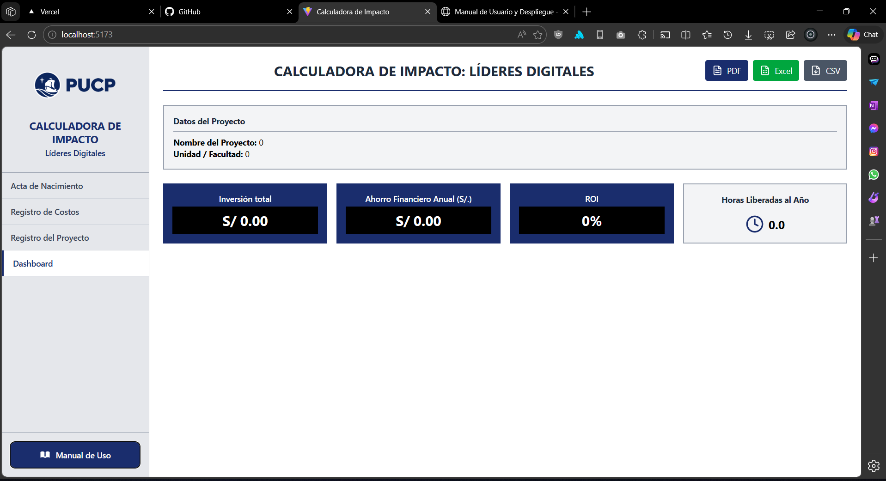
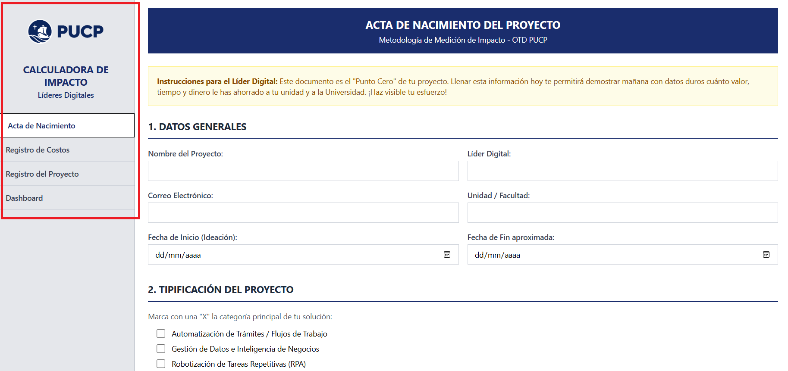
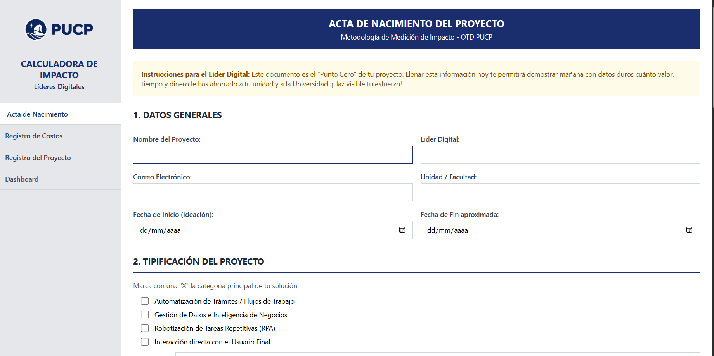
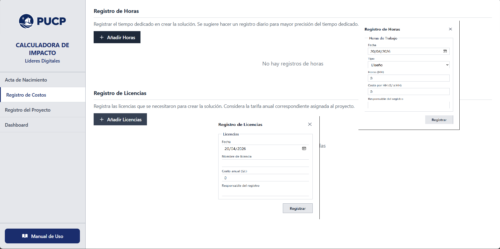
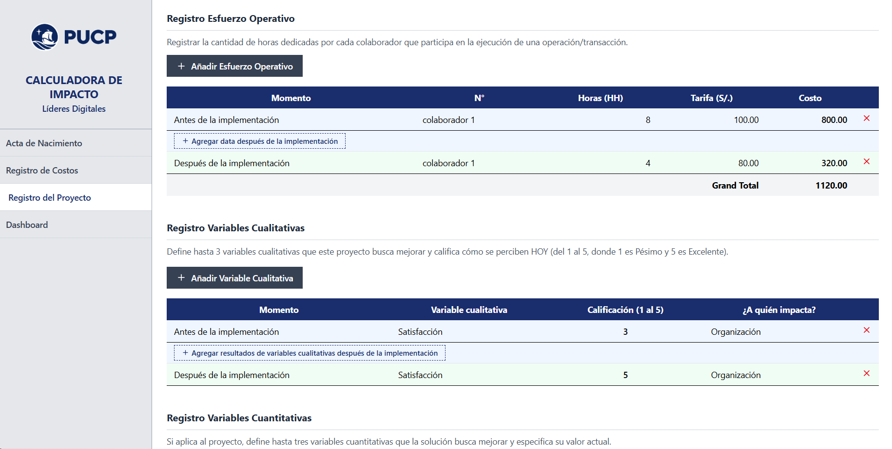
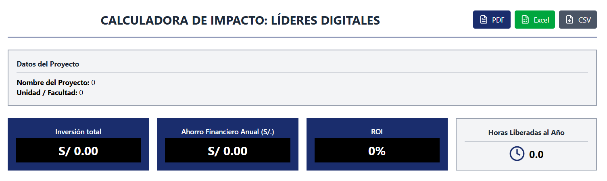
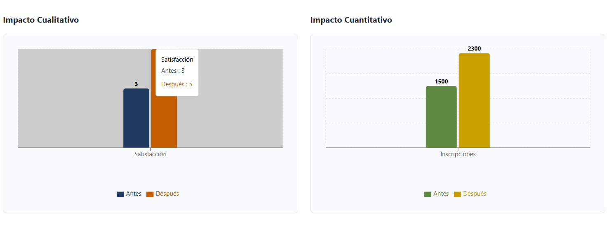
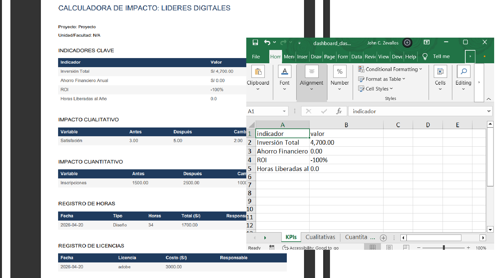

Manual Técnico y de Usuario - Calculadora de Impacto
Bienvenido al documento oficial de distribución y uso de la Calculadora de Impacto orientada a los Líderes Digitales y equipos de gestión de proyectos.
1. Introducción y Modos de Despliegue
La herramienta se ha desarrollado utilizando tecnologías web modernas. Con el fin de evitar la transmisión de paquetes pesados e innecesarios (como la carpeta node_modules que puede pesar cientos de megabytes), ofrecemos al cliente dos modalidades ágiles y eficientes de distribución y despliegue.
node_modules en los empaquetados entregables locales, ya que este código se autogenera mediante comandos genéricos del entorno Node.js, agilizando así la transferencia de la solución de nuestro equipo hacia el suyo.
1.1 Opción Inmediata: Alojamiento Administrado (Deploy en Vercel)
Para comenzar a utilizar la Calculadora de Impacto sin requerir configuraciones de servidores por parte de su equipo TI, puede acceder mediante nuestros enlaces administrados y optimizados en la nube a través de la plataforma Vercel.
Enlaces de acceso rápido:
- https://apppucp.vercel.app/
- https://apppucp-git-master-beawaremkts-projects.vercel.app
- https://apppucp-hl10az7bs-beawaremkts-projects.vercel.app
- Acceso inmediato: Sin instalación. Ingrese desde cualquier navegador web.
- Mantenimiento cero: Nosotros nos encargamos de las actualizaciones y la estabilidad.
- Seguridad de sesión: Los datos operativos de su proyecto se guardan únicamente de manera temporal en el caché local de su navegador, respetando completamente la privacidad de sus números confidenciales.

1.2 Opción de Infraestructura Local o Propia
Si las políticas de seguridad de su organización exigen alojamiento en su intranet o servidores web internos, puede hospedar usted mismo la aplicación. Nosotros entregaremos el código fuente limpio o la versión de compilación lista para producción.
Pasos para el despliegue de la versión fuente en su servidor:
- Asegúrese de tener instalado Node.js (v18.x o superior) en el entorno deseado.
- Extraiga el código fuente proporcionado en nuestro archivo ZIP omitiendo búsquedas de librerías previas.
- Abra el terminal, ubíquese en la carpeta y ejecute
npm install. (Esto descargará automáticamente todas las dependencias necesarias que nosotros omitimos estratégicamente en el ZIP). - Ejecute
npm run buildpara generar los archivos compilados estáticos optimizados. Esto creará una carpeta llamadadist/. - Traslade el contenido de la carpeta
dist/a cualquier servidor web tradicional (Apache, IIS, Nginx) que posea la organización.
2. Guía de Uso de la Aplicación
La Calculadora de Impacto está diseñada en un flujo lineal de 4 grandes fases o pestañas. Es importante seguir el orden de las pestañas desde el menú de navegación lateral para conseguir un cálculo exacto.

2.1 Fase 1: Acta de Nacimiento (Punto Cero)
En esta sección inicial, el Líder Digital documentará las bases y la problemática del proyecto para asentar una línea base (Línea Base Cuantitativa) que justificará la inversión.
- Llene los detalles como el nombre del proyecto, unidad, y líder responsable.
- El Dolor: Describa a detalle qué es lo que estanca el flujo actual e identifique las principales trabas utilizando los checkboxes.
- Línea Base: Esta es la parte más importante. Ingrese cuántas transacciones mensuales/anuales procesan actualmente y el tiempo de ciclo que demora. Esta cifra alimentará la matemática final de la herramienta.
- Formule su solución frente a estos problemas.

2.2 Fase 2: Registro de Costos (La Inversión)
Para calcular la rentabilidad (ROI) de la innovación, debemos sincerar el monto que se ha invertido para llevar a cabo la mejora digital.
- Registro de Horas: Registre cuántas horas invirtió su equipo de desarrollo, diseño o testing. Multiplique las horas por la tarifa estándar para hallar el costo en fuerza laboral (S/.).
- Adquisición de Licencias: Agregue los softwares e infraestructuras anuales contratadas para lograr que la solución funcione permanentemente (Ej: Licencias Office 365, Power Automate, Servicios de Nube AWS, Kissflow).

2.3 Fase 3: Registro del Proyecto (Esfuerzo Operativo)
En esta pantalla nos concentraremos en medir operativamente el impacto "Antes de la implementación" versus "Después de la implementación". Aquí demostraremos el ahorro real.
- Utilice la tabla de Esfuerzo Operativo para agregar cuántas horas le tomaba a un puesto de trabajo realizar la transacción manualmente en el pasado (Antes), y contraste ese número creando el registro posterior a la solución técnica (Después).
- Variables Cualitativas: ¿Ha mejorado la imagen de la organización? ¿Ha mitigado el estrés administrativo? Califique del 1 al 5 ambas realidades (Pre y Post solución).
- Variables Cuantitativas: Registre el descenso numérico exacto de errores procesales o tiempos ociosos.

2.4 Fase 4: Dashboard Integrado y Resultados Ejecutivos
El punto culmen. Con sus datos proporcionados, la herramienta computa de manera automática los resultados globales y el impacto general que el proyecto ha propiciado para su organización.
Podrá visualizar los KPI de alto nivel en un panel de control modernizado (Gráficos interactivos de barra generados con la herramienta Recharts), presentando datos financieros fundamentales:
- 💰 Inversión Total: Su capital empleado y licencias en el proyecto tecnológico.
- 🎯 Ahorro Financiero Anual: Beneficio monetario proyectado a un año frente a los gastos pasados.
- 📈 Métricas de ROI %: Su Retorno de Inversión consolidado.
- ⏳ Total de Horas Liberadas al Año.


3. Fórmulas y Cálculos Internos de la Calculadora
Para la total transparencia del motor analítico de nuestra herramienta subyacente, compartimos la lógica matemática y algoritmos que permiten llegar a las proyecciones visualizadas en el Dashboard:
Matemática Computada en nuestro Módulo de Cálculos
1. Inversión Total = Σ(Horas Trabajador * Tarifa Trabajo) + Σ(Costo de Licencias)
2. Costo Operativo Pasado = Σ(Horas "Antes" Operativas * Tarifa Rol)
3. Costo Operativo Nuevo = Σ(Horas "Después" * Tarifa Rol)
4. Diferencia Neta Costo Unidad = Costo Operativo Pasado - Costo Operativo Nuevo
5. Factor de Conversión de Transacciones = (Si es Mensual * 12) (Si es Semanal * 52) (Si es Anual * 1)
6. AHORRO FINANCIERO ANUAL NETO = Diferencia Neta Costo Unidad * Volumen Transacciones Línea Base * Factor de Conversión
7. ROI ALCANZADO (%) = ((Ahorro Financiero Anual Neto - Inversión Total) / Inversión Total) * 100
De esta manera automatizamos un proceso consultivo matemático que solía requerir pesados libros de cálculo hacia el ecosistema reactivo y ágil que su equipo disfruta hoy.
4. Exportación de Reportes Múltiples
Sabemos que los Liderazgos exigen respaldos documentales. Por ello, si se encuentra en la etapa final de registro (opción web Vercel), asegúrese de extraer la data antes de concluir dado que ésta no se persistirá mágicamente por motivos de privacidad.
- Reporte Automático en PDF: En el Dashboard, identifique el botón de PDF. Este compilará inteligentemente tablas estructuradas (Autotables) que compondrán un resumen gerencial listo para imprimir con la hoja de vida del proyecto.
- Volcado de Data en Excel (XLSX): A través de nuestro componente integrado exportador con hojas múltiples, todos sus registros manuales (Acta, Licencias, Tiempos de Esfuerzo) se volcarán a un Excel inmaculado de múltiples pestañas listas para su histórico en su intranet o nube segura empresarial.
- Extractos CSV: Obtenga un modelo puramente plano de variables.
